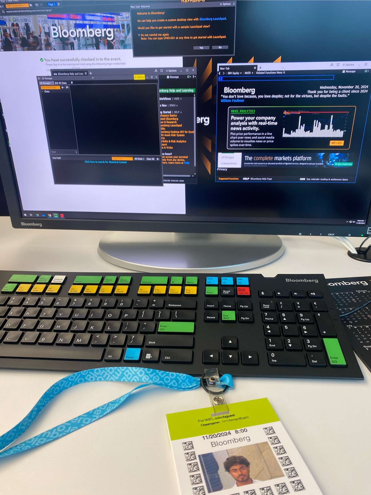
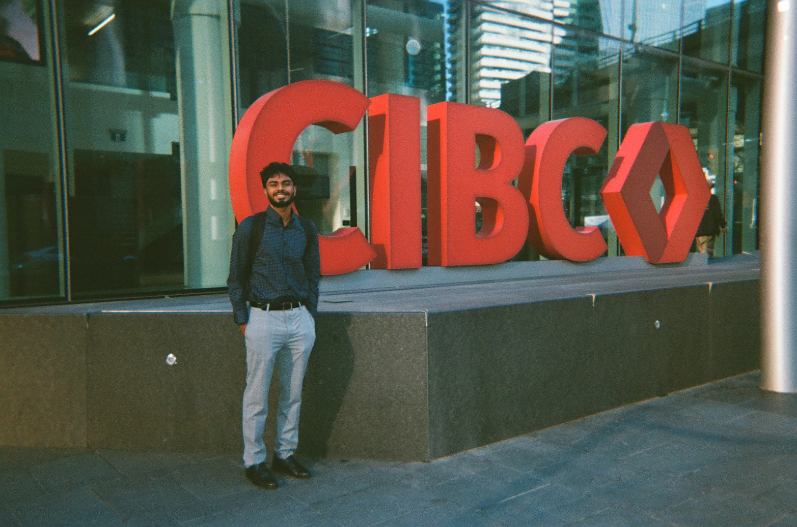

Working At CIBC
Summer 2025 CIBC Class Of Interns
Introduction
Hi everyone! My name is Thanush, and I am pursuing a Bachelor of Computing in Computer Science (co-op) at the University of Guelph.
As of now, I have completed around three years of my degree and am in the process of finishing my third co-op work term.
My third co-op term was with CIBC (Canadian Imperial Bank of Commerce) as a Business Systems Analyst on the Service Request Management and Application Security teams.
I was fortunate to return to the bank for my third co-op term although in a different position, which allowed me to explore different area's of the bank and what applications are being used.
At CIBC, I had the opportunity to work on a variety of applications as a Business Systems Analyst, provisioning tickets and providing access to internal users.
This allowed me to learn a ton of new applications and be able to complete my tasks promptly, ensuring internal user's within the bank had the appropriate access.
In this report, I will reflect on my experience here at the bank and how the past 4 months have impacted my career.
Information About The Employer
CIBC is widely known as one of the top five banks in Canada. It serves over 14 million personal banking, business, public sector, and institutional clients in Canada, the United States, and around the world. The office where I worked is located at 81 Bay Street on the 14th floor of CIBC Square. The areas of computer science most relevant to my role at CIBC include IT administration, and application support.
Interesting Facts
- The company was founded in 1867 and has since grown to become one of the biggest and best banks in the country.
- CIBC operates out of three main locations in downtown Toronto: its headquarters at 81 Bay Street, known as CIBC Square; 161 Bay Street, also known as the TD Canada Trust Tower, which includes the trade floor; and 595 Bay Street, referred to as Atrium on Bay.
- There were over 600 summer interns this work term, divided amongst many sections within the bank.

Miracle Day at CIBC! This is a day where all of the profits made on the tradefloor are donated to various charities.
Learning Goals
My 5 goals were...
- Take the first few weeks reviewing documentation, understanding what my team does and seeking help when needed. This will allow me to transition smoothly in my role and be able to make an impact during my 4-month term.
- Build a strong network within the organization by connecting and having coffee chats with other teams across the bank. Teams that I am interested in and could potentially see myself working there in the future.
- Identify a task my team works on and develop a simple automation or workflow enhancement to improve efficiency and how long the task takes.
- Enhance my professional communication skills by documenting my work, collaborating with my teammates and contributing to meetings.
- Strengthen my skills as a business systems analyst.
By the end of the term, I wanted to achieve a solid understanding of my role and responsibilities as a Business Systems Analyst. My goal was not only to learn the day-to-day tasks but also to gain insight into how my work contributes to larger team objectives and organizational success here at CIBC. By creating these 5 goals, I aimed to ensure that I would have a productive and rewarding co-op experience. Overall, setting these goals allowed me to grow as a professional, to step outside my comfort zone, and to prepare for future roles technology. They helped me stay accountable and ensured that my co-op term was both meaningful and impactful.
Job Description And Projects
During this co-op term, my role involved a variety of tasks.
I provisioned service requests for security group access and supported applications such as GitHub, Jira, and Teams Voice.
These responsibilities gave me valuable exposure to both technical systems and user-facing processes, which helped me build a stronger understanding of how technology supports business operations.
I was fortunate enough to work alongside two amazing teams during my term, the Service Request Management team and the Application Security team.
Each team provided me with unique experiences and learning opportunities which allowed me to further grow as a student.
Within my role, I was fortunate to attend events such as a magic show hosted by a professional magician. This magic show was to educate employees on the importantnce of how the mind can easily be fooled. I learned a lot about how to be cautious and aware of my surroundings, especially when it comes to cybersecurity. Another fun event I had the opportunity to participate in was the United Way Charity Soccer Tournament. After a disappointing performance last summer my team was back for revenge. Although we didn't win we faught hard and made it all the way to the semi-finals, losing in a penalty shootout. The tournament is always one of my favoruite events of the summer as it allows me to network with others while playing the sport I love.
Me at the Bloomberg head office!
Conclusion
This co-op experience has been an incredible opportunity for both personal and professional growth. At the start of the term, I set five goals for myself to guide my development: transitioning smoothly into my role, building a strong network, identifying process improvements, enhancing my communication skills, and strengthening my abilities as a Business Systems Analyst. Looking back, I can confidently say these goals helped shape my experience and made it both productive and rewarding. In the first few weeks, I focused on reviewing documentation, understanding team processes, and asking questions when I needed support. This helped me transition smoothly and quickly feel comfortable in my responsibilities, such as provisioning service requests for security group access and applications like GitHub, Jira, and Teams Voice. I also worked on expanding my network by having coffee chats and connecting with colleagues across the bank, which gave me insight into other teams and potential career paths I may pursue in the future. One of the most meaningful goals I worked toward was finding opportunities for process improvements. While I wasn’t able to fully implement a complete automation, I was able to research potential solutions and think critically about how workflows could be made more efficient. At the same time, I strengthened my communication skills by documenting my work, collaborating closely with teammates, and contributing to meetings. These experiences pushed me to be more confident in expressing ideas and working as part of a team. Overall, this co-op gave me a clearer picture of what it means to be a Business Systems Analyst and how finance and technology work hand-in-hand within the bank. I not only built on my technical skills but also grew in areas like communication, problem-solving, and teamwork—all of which will benefit me in future roles. I am grateful for the amazing people I had the chance to work with, from fellow co-ops to full-time employees, and the support and knowledge they shared with me. As I wrap up my term with the Service Request Management and Application Security team, I am proud of what I accomplished, thankful for the opportunities I had, and excited to carry these skills and experiences forward in my career.
The main sign at CIBC Square
Acknowledgments
I want to sincerely thank the entire Service Request Management and Application Security team, more specifically Khelan Parikh, and Sara Villanueva —for their incredible support and guidance over the past four months. I truly appreciate the time and effort they invested in helping me learn and grow, whether it was by sharing their expertise or trusting me with meaningful projects. I am so grateful for the opportunity to work alongside such a talented and supportive group. It has been an amazing experience, and I will genuinely miss being part of the App Sec and SRM team.